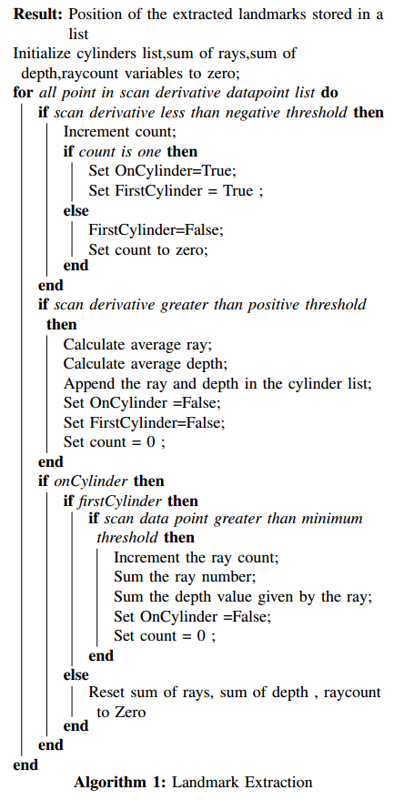
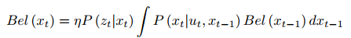

|
Methodology
The methodology followed is mentioned below:
• Give the input to the robot
• Collect the sensor data (LIDAR/odometry).
• Perform sensor fusion on the data
• Extract Features from the LIDAR Data
• Add new features into the database
• For existing features, send the position information to
the kalman update step
• Calculate the kalman gain
• Calculate the new estimate based on previous estimate
and measured value
• Update the map with the new information
• Do the above steps till the loop closure is attained
• Repeat the steps to improve the accuracy of the map
1. Landmark Extraction:
The simulator environment which we have created has
cylindrical pillars as landmarks which should be extracted
from the sensor data. Whenever there is a cylinder in the
environment, the rays hitting the cylinder will have a range
value different from the others. This changes can be found
out by taking the derivatives of the sensor data and finding
the spikes in the data.So,the derivatives of the sensor data are
calculated at each instant and stored in a list. The start of the
cylinder can be found by finding the negative spike whereas
the end of the cylinder can be found out by positive spike. We
should also consider the case of overlapping cylinders which
might give multiple spikes. These edge cases also addressed
in the algorithm given below. So, the Algorithm 1 explains
the extraction of the landmark position by finding spikes in
the environment

2. Extended Kalman Filter
The sensor data used for state estimation, being noisy,
gives rise to accumulated errors. There are several techniques
to reduce the error and one of the well established methods
is to use recursive probabilistic filters. The Bayes filter is
a recursive probabilistic filter which uses a prior belief and
applies Bayes theorem to get a posterior estimate.

Kalman Filter is a variant of the Bayes filter where,
the states are considered as a Gaussian distribution with a
mean around the actual value and an uncertainty defined by
the covariance. The problem with Kalman Filter is that it
cannot be applied to non-linear systems. In order to use this
methodology to non-linear systems, the system is linearized
using Taylor’s expansion or Jacobian Linearization. This
method is called Extended Kalman Filter.
The Extended Kalman Filter has two steps: (a) prediction
step and (b) correction step. In the prediction step, the current
state is predicted using the previous state and the current
input. This gives us a belief of our current state with some
uncertainty. This uncertainty is reduced after the correction
step. In this step, sensor measurement data is used to correct
our predicted belief. The prediction step is also called Motion
Model and the correction step is also called Observation
Model.
|
{kind=link}
{kind=link}